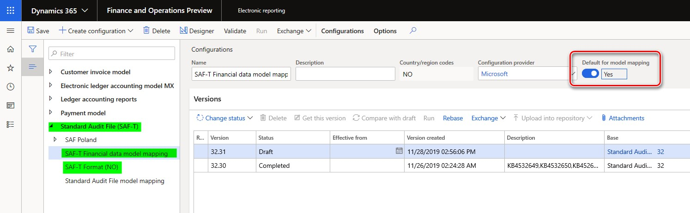
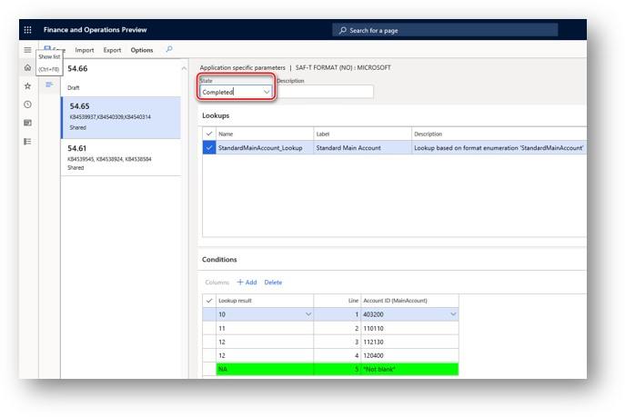

Standard Audit File for Tax (SAF-T) for Norway
This topic includes country-specific information about how to set up the Standard Audit File for Tax (SAF-T) for legal entities that have their primary address in Norway.
Beginning January 2020, all companies in Norway are required by the Norwegian Tax Administration to provide SAF-T Financial data. This requirement is in accordance with version 1.4 of the documentation, which was published on July 8, 2019, and version 1.3 of the technical documentation, which was published on March 23, 2018, in the form of an XML report. The publication of these pieces of documentation coincided with version 1.1 of the "Norwegian SAF-T Financial data" XML Schema Definition (XSD) schema that was developed by the SAF-T Working group, Skatteetaten, and based on "OECD Standard Audit File - Taxation 2.00," which was modified on February 2, 2018.
Setup
To use the Norwegian SAF-T Financial data report in Dynamics 365 Finance, complete the following setup tasks:
- Import Electronic reporting (ER) configurations.
- Set up the ER format on the General ledgers parameters page.
- Associate sales tax codes with Norwegian standard value-added tax (VAT) tax codes.
- Associate main accounts with Norwegian standard accounts.
- Enable features in Feature management.
Import Electronic reporting (ER) configurations
In Finance, import the following Electronic reporting (ER) configurations from the Global repository.
| ER configuration name | Configuration type |
|---|---|
| Standard Audit File (SAF-T) | Model |
| SAF-T Financial data model mapping | Model mapping |
| SAF-T Format (NO) | Format (exporting) |
For more information about how to download ER configurations, see Download ER configurations from the Global repository.
Import the most recent versions of the configurations. The version description usually includes the number of the Microsoft Knowledge Base (KB) article that explains the changes that were introduced in the configuration version.
Note
After you import all the ER configurations from the preceding table, set the Default for model mapping option to Yes for the SAF-T Financial data model mapping configuration.

Set up the ER format
- In Finance, go to General ledger > Ledger setup > General ledger parameters.
- On the General ledger parameters page, on the Standard Audit File for Tax (SAF-T) tab, in the Standard Audit File for Tax (SAF-T) field, select SAF-T Format (NO).

Associate sales tax codes with Norwegian standard value-added tax (VAT) tax codes
As the documentation explains, in Norwegian SAF-T Financial data, sales tax codes that are used in Finance must be associated with Norwegian standard VAT tax codes (<StandardTaxCode>) for the purpose of SAF-T reporting. The Norwegian standard VAT tax codes are available at https://github.com/Skatteetaten/saf-t.
To associate sales tax codes that are used in Finance with Norwegian standard VAT tax codes, follow these steps.
In Finance, go to Tax > Indirect taxes > Sales tax > Sales tax codes.
On the Sales tax code page, select the Sales tax code record, and then, on the Action Pane, on the Sales tax code tab, in the Sales tax code group, select External codes.

On the External codes page, specify the Norwegian standard VAT tax codes that should be used for the selected sales tax code record for the purpose of SAF-T reporting. On the External codes page, in the Overview section, in the Code field, select the identifier for the external code definition and enter a standard tax code that corresponds to the selected Sales tax code in Value field in Value section.

Associate main accounts with Norwegian standard accounts
As the documentation explains, in Norwegian SAF-T Financial data, main accounts that are used in Finance must be associated with Norwegian standard accounts for the purpose of SAF-T reporting. The Norwegian standard accounts are available at https://github.com/Skatteetaten/saf-t.
Starting from version 54.61, the electronic reporting format “SAF-T Format (NO)” supports the setup of Standard accounts for the Main accounts of the company by using Application specific parameters.
To associate Main accounts that are used in Finance with Norwegian standard accounts via Application specific parameters follow the following steps:
- Open the Electronic reporting workspace, in the configuration tree, select the “SAF-T Format (NO)” electronic reporting format.
- Make sure that company you are working is the company for which you want to set up the Application specific parameters.
- On the Action Pane, on the Configurations tab, in the Application specific parameters group, select Setup.
- Select the version of the format that you want to use on the left side of the Application specific parameters page.
- On the Lookup FastTab, select StandardMainAccount_Lookup, and then specify criteria on the Conditions FastTab by adding lines for each Result value which must be used in the selected company. If several Main accounts in the selected company must result the same Standard account, add a separate line for each Main account and specify the same Standard account for each one.
- Select the value, NA as the last condition in the list. It must be set to *Not blank* in Main account column. Verify the value in the Line column that “NA” is the last condition in the table.
- When you've finished setting up conditions, change the value of the State field to Completed, save your changes, and close the page.

You can easily export the setup of application-specific parameters from one version of a report and import it into another version by selecting Export or Import on the Action Pane. You can also export the setup from one report and import it into the same report in another company if the Main accounts are the same in both companies.
Enable features in Feature management
Go to Feature management > All.
In the feature list, find and select the following features:
- Optimization of query data source creation time during execution of ER reports
- Optimize datasets memory consumption at ER reports runtime
Select Enable now.
Generate the Norwegian SAF-T Financial data report
To generate the Norwegian SAF-T Financial data report, follow these steps.
In Finance, go to General ledger > Inquiries and reports > Standard Audit File for Tax (SAF-T) > Standard Audit File for Tax (SAF-T).
In the dialog box for the report, in the From date and To date fields, specify the start and end dates of the period that you want to generate the report for.
Select the check boxes for Customers, Vendors, and Financial dimensions to include all the records from the related tables on the report.
If the Customers and Vendors check boxes are cleared, the report will include only those customers and vendors of your company that there were transactions for in the reporting period, and customers and vendors that have a non-zero balance.
If the Financial dimensions check box is cleared, only those financial dimensions that were used in transactions during the reporting period will be reported in the <MasterFiles> node of the report.
In the Personnel number field, select an employee to add the employee to the <AuditFileSender> node of the report. This node reports information about the contact person for the audit file (First name and Last name).
Select the Report tax information in sales tax currency check box if you want to report tax information in tax code currency.
If the Report tax information in sales tax currency check box is selected, the <TaxInformation> element reports the following amounts in the tax code currency:
- GeneralLedgerEntries/Journal/Transaction/Line/TaxInformation/TaxBase
- GeneralLedgerEntries/Journal/Transaction/Line/TaxInformation/TaxAmount/Amount
If the Report tax information in sales tax currency check box is not selected, the amounts in the <TaxInformation> element and all of the amounts in the reports are reported in the accounting currency.
The following amount is always reported in document currency:
- GeneralLedgerEntries/Journal/Transaction/Line/TaxInformation/TaxAmount/CurrencyAmount
Where GeneralLedgerEntries/Journal/Transaction/Line/TaxInformation/TaxAmount/Currency represents the document currency.
You can also apply filters for the Main accounts and General journal entry fields by using Records to include FastTab in the dialog box for the report.
Report naming and splitting
The documentation for Norwegian SAF-T Financial data requires the following naming structure for the XML reports that are generated:
<SAF-T export type>_<organization number of the vendor that the data represents>_<date and time(yyyymmddhh24hmise>_<file number of total files>.xml
Here is an example:
SAF-T Financial_999999999_20160401235911_1_12.xml
Here is an explanation of the parts of this file name:
- SAF-T Financial states the SAF-T type of file.
- 999999999 represents the organization number that belongs to the owner of the data.
- 20160401235911 represents the date and time when the file was created. (A 24-hour clock is used for the time.)
- 1_12 represents file 1 out of 12 total files in the export (that is, in the same selection).
The volume of a single XML file must be less than 2 gigabytes (GB). Every individual XML file that is submitted must be validated against the schema. All <MasterFiles> nodes must be in the first file, and the associated transactions must be in the subsequent files (the number of these files is flexible).
The following table shows a sample selection of one accounting year that has 12 periods. For each period, there is one file that contains transactions.
| File number | Contents of the audit file |
|---|---|
| 1 | <Header> and <MasterFiles> nodes |
| 2–13 | <Header> and <GeneralLedgerEntries> nodes |
There can be a maximum of 10 XML files in the same zip archive.
In accordance with these requirements, the SAF-T Format (NO) ER format is implemented to automatically split the resulting report in XML format, based on the following assumptions:
The maximum volume of the resulting XML report is 2,000,000 kilobytes (KB) (that is, 2 GB).
All the XML files use the following naming structure:
<SAF-T export type>_<organization number of the vendor that the data represents>_<date and time(yyyymmddhh24hmise>
All the XML files are included in one zip archive.
Each individual XML file is validated against the schema.
After the report is generated, if more than one XML file is generated, the user must manually number the generated files in the zip archive by adding _<file number of total files> to the file names. The user must also make sure that there are no more than 10 XML files in the same zip archive. If there are more than 10 XML files in an archive, the user must manually split it into several archives, each of which has a maximum of 10 XML files.
Implementation details
<AnalysisType> and <AnalysisTypeDescription> nodes
The SAF-T report for Norway must include information about the AnalysisTypeTable under the MasterFiles node of the report. AnalysisTypeTable must represent a table with the analysis code identifiers that are used for further specification of transaction data. In Finance, Financial dimensions is the data source for the AnalysisTypeTable node. When you set up Financial dimensions in your legal entity, use the ReportColumnName field of the Financial dimension data source for the value that will be reported in the <AnalysisType> node. Use the Dimension name field of the Financial dimension data source for the value that will be reported in the <AnalysisTypeDescription> node.
SAF-T report and One voucher
Using the One voucher functionality introduces a limitation of further SAF-T reporting for data if one voucher was applied. We recommend that you set the Allow multiple transactions within one voucher parameter on the General ledger parameters page to No in your legal entity if you post transactions that are part of the SAF-T report. For information about One voucher functionality, see One voucher.
[!include[footer-include](../../includes/footer-banner.md)]